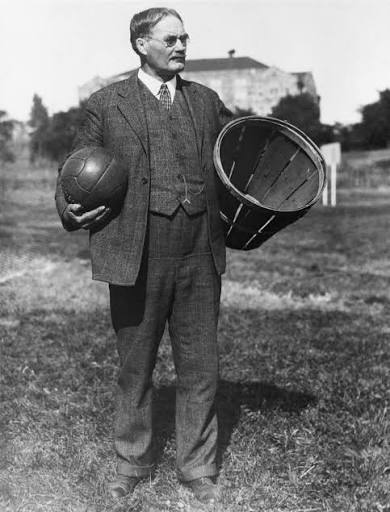

General History
Who Invented Basketball
Basketball was invented by a Canadian-American physical educator by the
name of DR. James Naismith in december of 1891 at the international YMCA
training school (now SpringField College) in springfield massachusetts.
During the Winter of 1891 his students needed a safe indoor game to keep
them fit and reduce risks of collision to reduce injury.

The Original Thirteen Rules
- The ball may be thrown in any direction with one or both hands
- The ball may be batted in any direction with one or both hands (never the fist)
- The player may not run with the ball. The player must throw from the spot on which he catches it. Exception for someone who caught while running at good speed if he tries to stop
- The ball must be held in or between the hands, The arms or body must not be used for holding it
- No shouldering, holding, pushing, tripping, or striking in any way, The first infringement of this rule by any player shall count as foul, The second shall disqualify him until the next goal is made, Or if there was evident intent to injure the person they are out for the whole game no substitute allowed
- A foul is striking at the ball with your fist
- If either side makes three consecutive fouls, It shall count as a point for the opponent (Consecutive means without the opponenet making a foul in the mean time)
- A goal shall be made when the ball is thrown or batted from the grounds into the basket and stays there, providing those defending the goal do not touch or disturb the goal. If the ball rests on the edges, and the opponent moves the basket, it shall count as a goal.
- When the ball goes out of bounds, it shall be thrown into the field of play by the person first touching it. In case of a dispute, the umpire shall throw it straight into the field. The thrower-in is allowed five seconds; if he holds it longer, it shall go to the opponent. If any side persists in delaying the game, the umpire shall call a foul on that side.
- The umpire shall be judge of the men and shall note the fouls and notify the referee when three consecutive fouls have been made. He shall have power to disqualify men according to Rule 5.
- The referee shall be judge of the ball and shall decide when the ball is in play, in bounds, to which side it belongs, and shall keep the time. He shall decide when a goal has been made, and keep account of the goals with any other duties that are usually performed by a referee.
- The time shall be two 15-minute halves, with five minutes' rest between.
- The side making the most goals in that time shall be declared the winner. In case of a draw, the game may, by agreement of the captains, be continued until another goal is made.